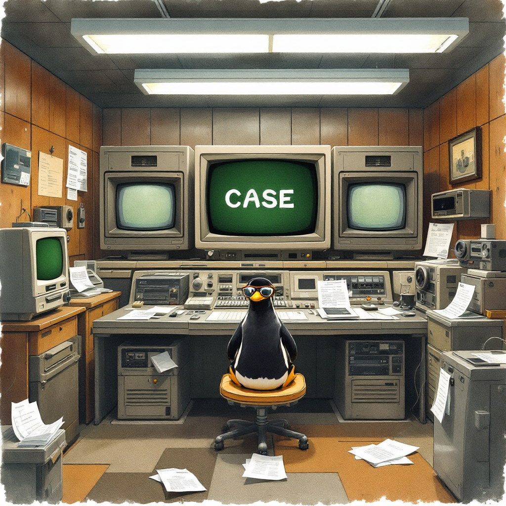

This comprehensive guide explains how to use the case statement in Linux for clean, effective decision-making in your scripts. Perfect for beginners who want to understand branching logic and flow control with practical, working examples.
Author’s Note: I am learning this as I write this series. There might be some mistakes, so please point them out in the comments. We’ll learn together!
Introduction
When writing scripts in Linux, you’ll often need your program to make decisions based on different conditions. While the if statement is one way to handle this, the case statement provides a cleaner, more readable alternative when dealing with multiple choices. It’s especially useful for creating menu-driven programs or handling various command-line options.
The case statement is like a traffic director for your script - it examines a value and routes your program down different paths depending on what it finds. Let’s dive in!
Basic Syntax of the case Statement
Here’s the fundamental structure of a case statement:
case word in
pattern1) commands ;;
pattern2) commands ;;
*) default_commands ;;
esacLet’s break this down:
wordis the variable or value you want to testpattern1,pattern2, etc. are the patterns you’re matching againstcommandsare what you want to run when a match is found*)is the catch-all pattern (like an “else” statement);;marks the end of each case optionesac(that’s “case” spelled backward) closes the statement
Think of it like a multiple-choice question: “If the value is X, do this; if it’s Y, do that; otherwise, do something else.”
Simple Working Examples
Let’s look at some practical examples you can try right away.
How This Works:
- We display a menu with numbered options
- The
read -pcommand asks for input with a prompt - The
casestatement checks the value stored in$REPLY(the default variable forread) - Based on what the user entered:
0: The program displays “Program terminated” and exits1: Shows the hostname and uptime information2: Displays disk space usage withdf -h(human-readable format)3: Shows home directory space usage- Any other input: Shows an error message and exits with error code 1
This is much cleaner than writing multiple if/elif/else statements!
Example 2: Yes/No Response Handler
Here’s a simple script that processes yes/no responses:
#!/bin/bash
read -p "Do you want to continue? (y/n) > " answer
case $answer in
[Yy]|[Yy][Ee][Ss])
echo "Continuing..."
;;
[Nn]|[Nn][Oo])
echo "Stopping..."
exit 0
;;
*)
echo "Invalid response - please answer y or n"
exit 1
;;
esacHow This Works:
- The script asks if the user wants to continue
- The
casestatement:
- Matches
y,Y,yes,YES, etc. using pattern[Yy]|[Yy][Ee][Ss] - Matches
n,N,no,NO, etc. using pattern[Nn]|[Nn][Oo] - For any other input, shows an error message
This example shows how to use pattern matching to accept multiple forms of the same answer.
Example 3: File Type Handler
This script demonstrates how to perform actions based on file extensions:
#!/bin/bash
file="example.txt"
case $file in
*.txt) echo "Text file" ;;
*.jpg|*.png) echo "Image file" ;;
*.sh) echo "Shell script" ;;
*) echo "Unknown file type" ;;
esacHow This Works:
- We define a variable
filewith the value “example.txt” - The
casestatement checks the file name against different patterns:
*.txtmatches files ending with .txt*.jpg|*.pngmatches files ending with either .jpg or .png*.shmatches shell scripts*matches anything else
Try modifying the file variable to see different results!
Pattern Matching Features
The case statement supports several pattern matching techniques:
Single character matches:
'a)'matches the character ‘a’Character classes:
[[:alpha:]])matches any alphabetic characterchar="a" case $char in [[:lower:]]) echo "Lowercase letter" ;; [[:upper:]]) echo "Uppercase letter" ;; [[:digit:]]) echo "Digit" ;; *) echo "Other character" ;; esacMultiple patterns using |:
'a|A)'matches either ‘a’ or ‘A’Wildcard matching:
'*.txt)'matches any string ending with .txtDay of Week Example: Group similar cases together
#!/bin/bash # Get current day of week (1-7, 1 is Monday) day=$(date +%u) case $day in 1) echo "It's Monday - Start of the work week!" ;; 2|3|4) echo "It's a regular work day" ;; 5) echo "It's Friday - Almost weekend!" ;; 6|7) echo "It's the weekend!" ;; *) echo "Invalid day number" ;; esac
This example shows how to group cases (like treating Tuesday, Wednesday, and Thursday the same).
Advanced Feature: Multiple Actions Per Match
In Bash 4.0 and newer, you can use ;;& instead of ;; to continue checking patterns even after a match:
case $char in
[[:lower:]]) echo "Is lowercase" ;;&
[[:alpha:]]) echo "Is alphabetic" ;;&
esacIf $char contains a lowercase letter, both messages will be displayed because the script continues checking patterns after the first match.
Common Mistakes to Avoid
When using case statements, watch out for these beginner pitfalls:
1. Forgetting the Catch-all Pattern
Always include a catch-all pattern (*) as the last case. Without it, unexpected input might not be handled properly:
# Bad example - no catch-all
case $choice in
1) echo "Option 1" ;;
2) echo "Option 2" ;;
esac
# Good example - with catch-all
case $choice in
1) echo "Option 1" ;;
2) echo "Option 2" ;;
*) echo "Invalid option" ;;
esac2. Not Quoting Variables
When using variables in scripts, always quote them to handle spaces and special characters properly:
# Bad example - unquoted variable
file=my file.txt # This will cause an error!
case $file in # Should be "$file"
*.txt) echo "Text file" ;;
esac
# Good example - quoted variable
file="my file.txt"
case "$file" in
*.txt) echo "Text file" ;;
*) echo "Other file" ;;
esac3. Forgetting ;;
Each case pattern must end with ;; - forgetting this will cause syntax errors:
# Bad example - missing ;;
case $choice in
1) echo "Option 1" # Missing ;;
2) echo "Option 2" ;;
esac
# Good example
case $choice in
1) echo "Option 1" ;;
2) echo "Option 2" ;;
esac4. Mixing Up case Syntax With if Syntax
Remember that case has its own unique syntax different from if statements:
# Bad example - mixing syntaxes
case $choice in
if $choice -eq 1; then # Wrong! Don't use if inside case
echo "Option 1"
fi ;;
esac
# Good example
case $choice in
1) echo "Option 1" ;;
esacBest Practices for Using case Statements
Follow these guidelines for clean, effective case statements:
Use for multiple choices: When you have 3+ options,
caseis usually cleaner thanif/elif/elseAdd comments for complex patterns: Explain what your patterns are matching
Include a catch-all pattern: Always add
*)as the last caseGroup related patterns: Use the
|operator to group similar casesQuote your variables: Always use quotes around variables:
"$variable"Test your scripts: Try different inputs to ensure your script handles all cases
Your Turn!
Let’s practice! Try writing a simple script that takes a command-line argument and tells you whether it’s a vowel, consonant, number, or something else.
Here’s a starter template:
#!/bin/bash
# Check if an argument was provided
if [ $# -eq 0 ]; then
echo "Please provide a single character as an argument"
exit 1
fi
# Get the first character of the first argument
char="${1:0:1}"
# YOUR case STATEMENT HERE
case ... in
# Your patterns here
esacClick to See Solution!
#!/bin/bash
# Check if an argument was provided
if [ $# -eq 0 ]; then
echo "Please provide a single character as an argument"
exit 1
fi
# Get the first character of the first argument
char="${1:0:1}"
# Check the character type
case "$char" in
[aeiouAEIOU])
echo "'$char' is a vowel"
;;
[bcdfghjklmnpqrstvwxyzBCDFGHJKLMNPQRSTVWXYZ])
echo "'$char' is a consonant"
;;
[0-9])
echo "'$char' is a number"
;;
*)
echo "'$char' is a special character"
;;
esaccharcheck.sh), make it executable with chmod +x charcheck.sh, and run it with a character argument: ./charcheck.sh a
Key Takeaways
- The
casestatement provides a clean way to handle multiple choice decisions in shell scripts - It’s more readable than multiple
ifstatements for handling several conditions - Basic syntax:
case variable in pattern) commands ;; esac - Always include a catch-all pattern (
*) as the last case - Use pattern matching features like wildcards (
*), character classes ([:alpha:]), and pattern grouping (|) - Quote your variables to avoid issues with spaces and special characters
- Test your scripts with various inputs to ensure they work correctly
Conclusion
The case statement is an essential tool in your Linux scripting arsenal. By using it effectively, you can create cleaner, more readable scripts that handle multiple conditions elegantly. Whether you’re building a menu system, processing command-line options, or categorizing data, the case statement offers a structured approach to decision-making in your scripts.
Remember that practice is key - try modifying the examples we’ve covered and create your own scripts to solidify your understanding. As you become more comfortable with case statements, you’ll find they make your scripts more maintainable and easier to debug.
Frequently Asked Questions
1. When should I use a case statement instead of if/else?
Use a case statement when you need to check a single variable against multiple possible values. If you find yourself writing many elif statements checking the same variable, consider switching to case.
2. Can I use case with numbers?
Absolutely! You can match specific numbers or ranges. For example: case $num in 1) ... ;; [2-5]) ... ;; esac
3. How do I match multiple patterns in one case?
Use the pipe symbol (|) to match multiple patterns: case $var in a|A|apple) ... ;; esac
4. Can I use wildcards in case patterns?
Yes, you can use wildcards like * (matches anything) and ? (matches any single character).
5. How do I make case statements case-insensitive?
You can either use pattern grouping like [Yy][Ee][Ss] to match “yes”, “YES”, “Yes”, etc., or use the shopt -s nocasematch command before your case statement (but remember to reset it with shopt -u nocasematch after).
References
Shell Tips - “Top 10 Bash Pitfalls You Don’t Want to Make”
A comprehensive guide to common mistakes in bash scripting and how to avoid them.Stack Overflow - “Bash does not allow if statement inside case statement”
Discussion of syntax limitations when combining different control structures in bash scripts.
Further Reading
The following resources were also mentioned in the original document:
Note to readers: If you found this guide helpful, please consider bookmarking these resources for future reference. The online bash community is also an excellent place to ask questions and share your own experiences with flow control in Linux scripting.
Have you discovered any other helpful resources for learning bash scripting? Feel free to share them in the comments below!
Happy Coding! 🚀

You can connect with me at any one of the below:
Telegram Channel here: https://t.me/steveondata
LinkedIn Network here: https://www.linkedin.com/in/spsanderson/
Mastadon Social here: https://mstdn.social/@stevensanderson
RStats Network here: https://rstats.me/@spsanderson
GitHub Network here: https://github.com/spsanderson
Bluesky Network here: https://bsky.app/profile/spsanderson.com
My Book: Extending Excel with Python and R here: https://packt.link/oTyZJ
You.com Referral Link: https://you.com/join/EHSLDTL6